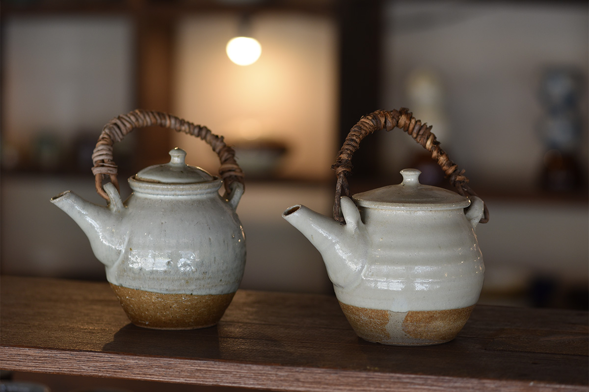
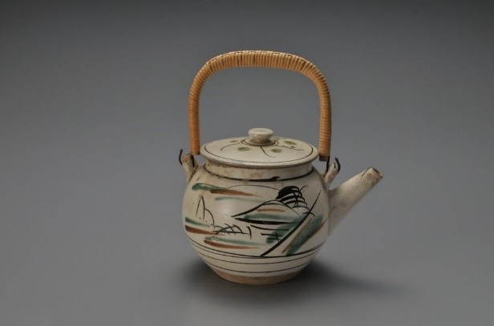
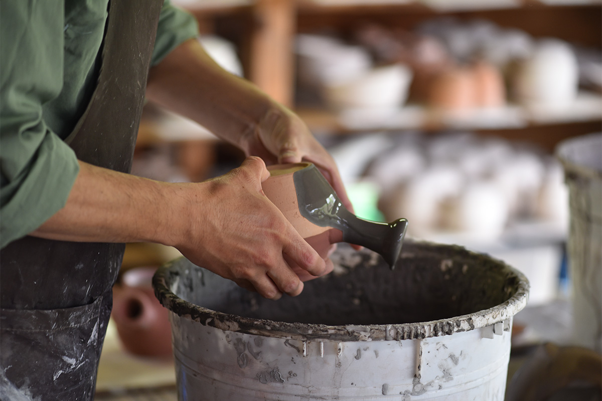
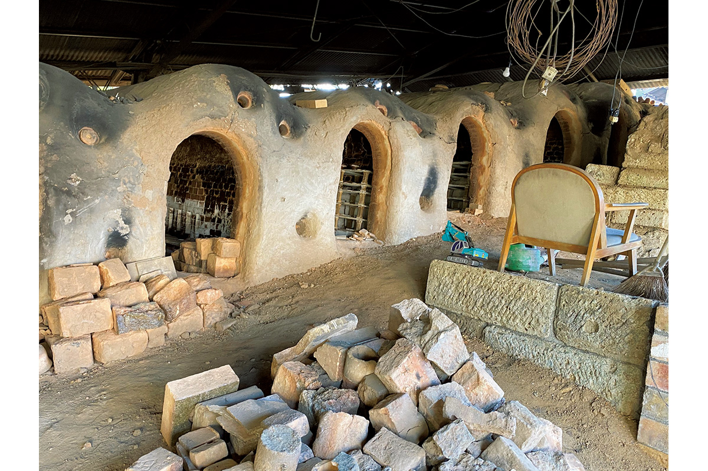
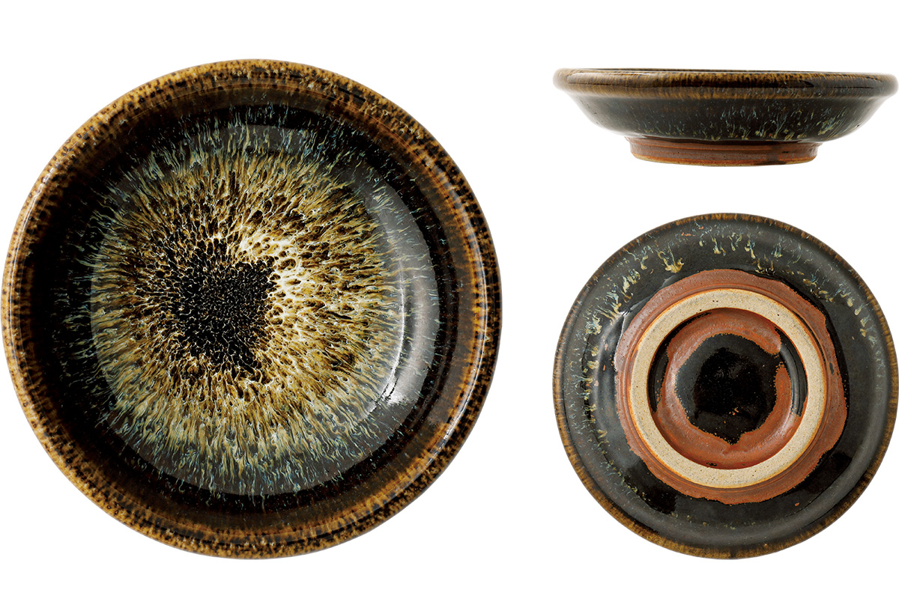
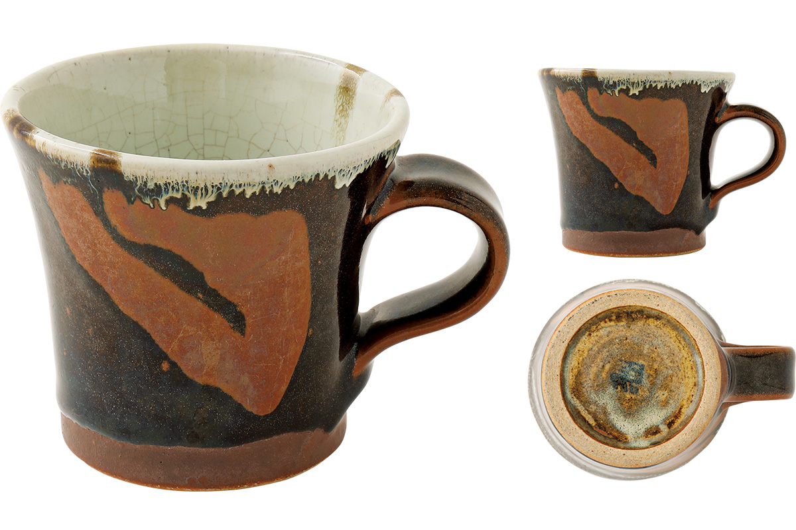
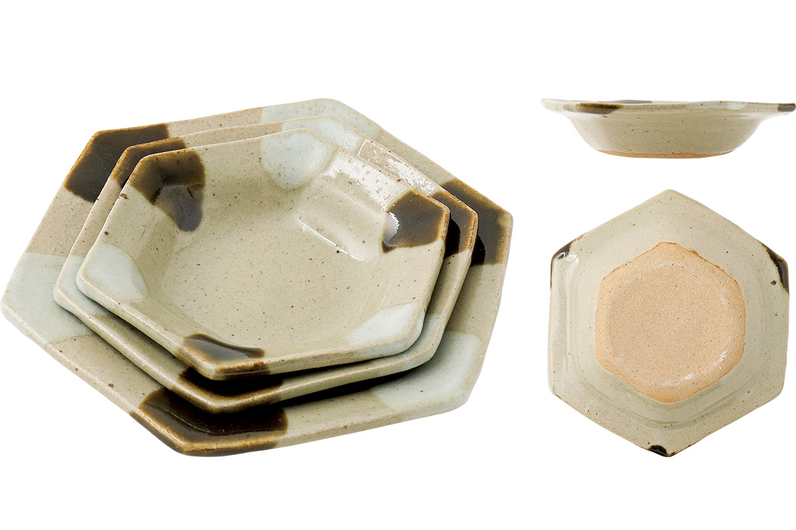
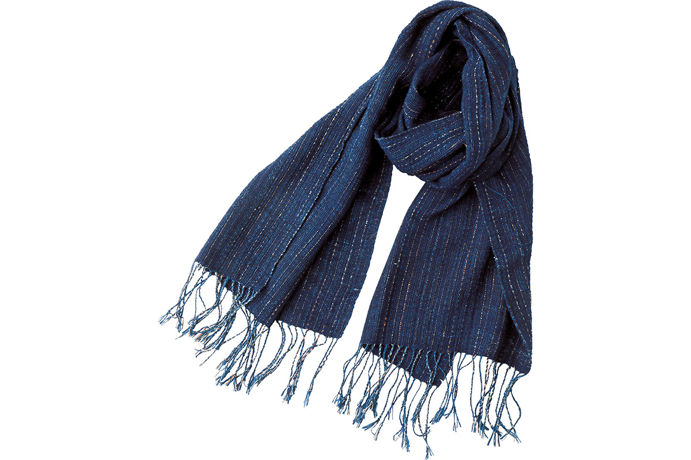
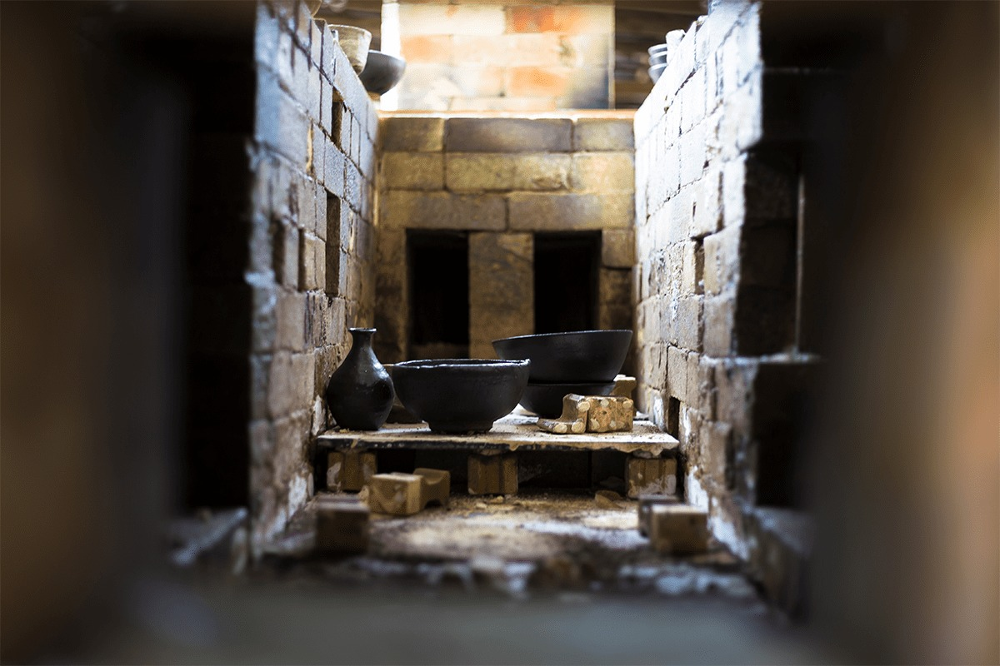
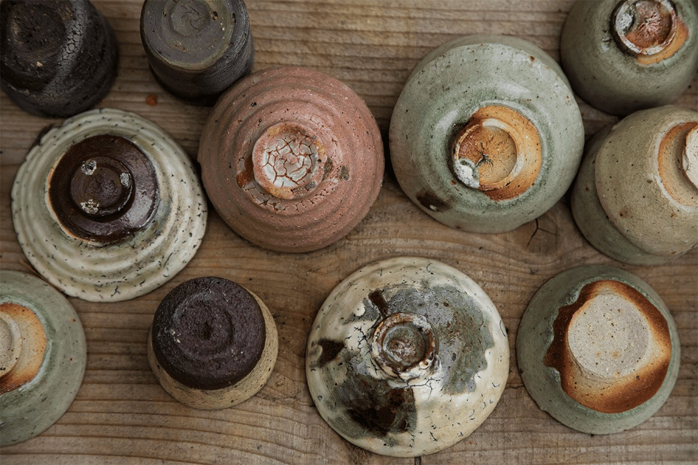

Префектура Тотиги · Масико · керамика и мингэй
Масико: город керамики, где у посуды нет единого стиля

Масико, небольшой город на юго-востоке префектуры Тотиги, называют столицей керамики мингэй. Здесь жил и работал Сёдзи Хамада, и его вольный дух до сих пор притягивает гончаров со всей Японии и из-за рубежа.
Город
Керамика, у которой нет одного стиля
Гончары работают в Масико примерно с середины XIX века. Про местную керамику говорят, что её стиль в том, что стиля нет: одни мастера держатся традиционных глазурей, другие не пользуются ни местной глиной, ни местными глазурями. Многие приехали издалека и открыли здесь свои печи, и город принимает всех.
Директора магазина Fennica при BEAMS, которые много лет ищут для него вещи по всей Японии, ездят в Масико больше двадцати лет. Путь к ремеслу мингэй открыл им табурет «Баттерфляй» дизайнера Сори Янаги (1915–2011). Они пришли учиться к самому Янаги, а потом отправились по Японии к мастерам. Первой была деревня Ёмитан на Окинаве, второй Масико.
Город удобен и путешественнику, и гончару. От Токио сюда около двух часов, а от станции Уцуномия около 50 минут на машине. Достаточно близко, чтобы приехать на день, и достаточно далеко, чтобы мастера могли спокойно работать.
История
От кухонных горшков к искусству
Сегодня керамику Масико представляют такой: толстые стенки, мягкие очертания, простые цвета и при этом смелый, авторский рисунок. Так было не всегда.
Первую печь здесь открыли в конце периода Эдо. Мастер Кэйдзабуро Оцука (1828–1876) научился гончарному делу в соседнем Касаме, нынешней префектуре Ибараки, и перенёс его в Масико. При поддержке местного княжества Куробанэ печи выпускали в основном повседневную посуду, и в эпоху Мэйдзи она разошлась по всему региону Канто. Масико долго был городом кухонной утвари, а не художественной керамики.
За границей на неё смотрели иначе. С конца эпохи Мэйдзи и в эпоху Тайсё (1912–1926) чайники доби из Масико в больших количествах уходили в Америку. Травы и цветы, которые рисовали на них безымянные мастера, казались американцам экзотикой.

Глина, которая определила стиль
Керамика Масико связана с Касамой, а та, по преданию, идёт от школы Сигараки. Но у Сигараки и Масико разная глина. Сигаракская пластичная и послушная, а местная грубая, с множеством пузырьков воздуха. Тонкую изящную посуду из неё не сделаешь, поэтому долгое время здесь лепили большие толстостенные горшки и чаны для хозяйства.
Именно этот недостаток стал главной чертой Масико. Посуда получается массивной, с грубоватой деревенской фактурой, и в этом её обаяние.
От глины зависят и глазури. Обожжённый черепок здесь темнеет, и его прячут под белой глазурью «нука-дзиро» из рисовой шелухи или под коричневой «каки». Часто встречаются чёрная и зелёная глазури. Посуду украшают следами широкой кисти «хакэмэ» и бороздками гребня «кусимэ». Самый узнаваемый приём называется «нагасигаки»: глазурь льют на заготовку прямо из ковша или чайника, и она ложится свободными потёками. Этот смелый способ особенно любил Сёдзи Хамада.

Мастер
Сёдзи Хамада: «Нашёл путь в Киото, начал в Англии»
Свой путь Хамада описал так:
«Нашёл путь в Киото, начал в Англии, учился на Окинаве, вырос в Масико»
Сёдзи Хамада
Сёдзи Хамада (1894–1978) решил стать гончаром ещё школьником в Токио. Он учился керамике в Высшем техническом училище Токио, а затем работал в Киото в исследовательском институте фарфора вместе с Кандзиро Каваи (1890–1966). Там он и начал делать свои первые вещи. Потом он сблизился с английским гончаром Бернардом Личем (1887–1979) и уехал в Англию, где изучал местную керамику и продолжал работать сам.
В 1924 году Хамада приехал в Масико, а через несколько лет поселился здесь. Он подолгу жил и на Окинаве, но мастерская оставалась в Масико, и вместе с его именем керамика города получила славу настоящего искусства. Позже Хамаду признали носителем важного нематериального культурного достояния, или «живым национальным сокровищем».
Вместе с Каваи и философом Мунэёси Янаги (1889–1961) Хамада основал движение мингэй. Его идея в «красоте пользы»: настоящая красота живёт в простых вещах, которые люди делают для повседневной жизни. Народная керамика разных краёв вдохновляла Хамаду, но он шёл дальше, создавая свой авторский стиль, и охотно брал приёмы у гончаров других стран. Вслед за ним в Масико потянулись другие мастера, и город стал местом, куда гончары приезжают творить. Влияние Хамады, как считают, ощутили керамические центры по всей стране.
Мемориальный музей «Масико Санкокан»
Часть дома Хамады открыта как Мемориальный музей Сёдзи Хамады «Масико Санкокан». Здесь показывают вещи, которые он собирал по всему миру и в разных эпохах, и его собственные работы, так что по одному музею можно понять историю всего города. Директора Fennica советуют не торопиться: здесь много редких книг, в том числе журнал «Мингэй». Отдельно стоит посмотреть сад, за которым сам ухаживает внук Хамады, тоже гончар.
Мемориальный музей Сёдзи Хамады «Масико Санкокан»
- Адрес
- префектура Тотиги, уезд Хага, Масико, Масико, 3388
- Телефон
- +81 285-72-5300
- Часы работы
- 9:30–17:00 (вход до 16:30)
- Выходные
- понедельник (если праздник, то на следующий день), бывают внеплановые закрытия
- Цены / Вход
- взрослые 800 иен, старшая и средняя школа 400 иен, младше бесплатно
«Тогэй мессэ Масико»: второй дом Хамады
Ещё один дом Хамады перенесли в музейный комплекс «Тогэй мессэ Масико», где работает Музей керамики Масико. Рядом восстановили печь нобори-гама. Комплекс стоит на холме, и директора Fennica советуют подниматься к нему пешком снизу, глядя на цветы и деревья по сезону.
«Тогэй мессэ Масико» (Музей керамики Масико)
- Адрес
- префектура Тотиги, уезд Хага, Масико, Масико, 3021
- Телефон
- +81 285-72-7555
- Часы работы
- 9:30–17:00, с ноября по январь до 16:00 (вход за 30 минут до закрытия)
- Выходные
- понедельник (если праздник, то на следующий день)
- Цены / Вход
- взрослые 600 иен, школьники и посетители старше 65 лет 300 иен
Мастерские
Печи, глазури и индиго
В некоторых мастерских Масико можно увидеть ступенчатую печь нобори-гама, которой пользуются до сих пор.

«Дайсэй-гама»: семь поколений
Мастерскую «Дайсэй-гама» основали в 1861 году. Здесь делают повседневную посуду из местной глины и материалов, с традиционными глазурями Масико: коричневой «каки», белой «нука-дзиро», чёрной, янтарной «амэ» и зелёной «нука-сэйдзи». Посуду обжигают в самой большой печи нобори-гама в Масико, и на дне тарелок после обжига проступает естественный узор.
Кроме печи стоит посмотреть галерею в отдельном здании. Седьмой глава мастерской учился у известного мастера слипвера в Тамба-Сасаяме и сам собирает старинные вещи. По словам директоров Fennica, это заметно в его работах: у него свой стиль, совсем не похожий на работы шестого главы.


«Дайсэй-гама»
- Адрес
- префектура Тотиги, уезд Хага, Масико, Дзёнайдзака, 92
- Телефон
- +81 285-72-2222
- Часы работы
- 8:00–17:00
- Выходные
- вторник
Мастерская Хамады тоже работает: её ведёт внук мастера, третий в семье. Для Fennica здесь сделали шестиугольные тарелки по форме, которую Хамада использовал при жизни.

Мастерская индиго «Хигэта»
В Масико работают не только гончары. Мастерскую «Хигэта» основали в конце XVIII века, её узнают по красивой соломенной крыше: здание охраняется как культурное достояние префектуры. Внутри в ряд стоят 72 чана с индиго, и все они в работе. Здесь красят хлопок, выращенный в самом Масико, и шьют из него платки, футболки, занавески норэн и шарфы. Если повезёт, можно увидеть, как ткань опускают в чан.

Мастерская индиго «Хигэта»
- Адрес
- префектура Тотиги, уезд Хага, Масико, Дзёнайдзака, 1
- Телефон
- +81 285-72-3162
- Часы работы
- 8:30–17:00
- Выходные
- понедельник
Магазины
Лавки, которые хранят память города
В Масико местные магазины рассказывают историю города не хуже музеев. По словам директоров Fennica, хозяева магазинов мингэй показывают молодым гончарам, приехавшим со стороны, старую посуду и пересказывают им истории былых времён.
«Мингэйтэн Масико» был первым магазином мингэй в городе. Над входом висит занавеска норэн по рисунку Хамады. Директора Fennica хвалят, как здесь подобраны вещи: всё на полках выбрано точно.
«Токо» открылся в 1974 году в бывшем складе из камня оя. Здесь проходят выставки современных мастеров и продают не только керамику, но и местные игрушки.
«Уцува-но мисэ Каноя» стоит чуть в стороне от главной улицы, поэтому посуду здесь можно выбирать без спешки. Кроме повседневной посуды есть авторские работы.
«Акабанэ мандзю хомпо» продаёт простые сладкие булочки мандзю, которые любят местные и берут с собой в подарок. Хозяйка лавки в молодости носила мандзю в дом Хамады, где никогда не переводились гости. Говорят, он заказывал по 100 штук в день.
«Мингэйтэн Масико»
- Адрес
- префектура Тотиги, уезд Хага, Масико, Масико, 2901
- Телефон
- +81 285-72-2231
- Часы работы
- 10:00–16:00
- Выходные
- вторник
«Токо»
- Адрес
- префектура Тотиги, уезд Хага, Масико, Дзёнайдзака, 2
- Телефон
- +81 285-72-2081
- Часы работы
- 10:00–18:00
- Выходные
- новогодние праздники
«Уцува-но мисэ Каноя»
- Адрес
- префектура Тотиги, уезд Хага, Масико, Масико, 3169-1
- Телефон
- +81 285-72-8717
- Часы работы
- 10:00–17:00
- Выходные
- четверг и пятница
«Акабанэ мандзю хомпо»
- Адрес
- префектура Тотиги, уезд Хага, Масико, Масико, 2910-2
- Телефон
- +81 285-72-3153
- Часы работы
- 8:00–19:00
- Выходные
- понедельник
По дороге между мастерскими можно заехать на придорожную станцию «Масико» с местными овощами и продуктами. Здесь можно попробовать «бирма-дзиру», местный суп из летних овощей: томатов, баклажанов и других. О придорожной станции подробно рассказывает отдельная статья.
Ярмарка
Ярмарка керамики весной и осенью
Масико знаменит ярмаркой керамики, которая проходит дважды в год. Магазины, мастерские и сотни палаток выстраиваются вдоль улицы Дзёнайдзака и в квартале Саядо. В 2026 году весенняя ярмарка шла с 29 апреля по 6 мая, а осенняя назначена с 31 октября по 3 ноября.
Новое поколение
Город, куда едут гончары
Масико и сегодня собирает мастеров из Японии и из-за рубежа. Наверное, поэтому здесь больше маленьких мастерских, чем в других керамических центрах, и многие работы уже не укладываются в привычное представление о керамике Масико.

Один из них, Рюити Хага, работает в Масико с 2013 года. Он не держится за местную глину, ездит за ней далеко и сам строит печи. О нём и других гончарах Масико, к которым можно прийти, рассказывает статья о мастерских.

Ночлег
«Масико докэй»
Масико легко объехать за день, но директора Fennica советуют остаться на ночь в гостинице «Масико докэй». При ней есть галерея, а в каменной купальне под открытым небом хорошо отдохнуть после прогулки по мастерским. В 2020 году ночь без питания стоила от 5700 иен на человека, с налогом и обслуживанием.
«Масико докэй»
- Адрес
- префектура Тотиги, уезд Хага, Масико, Масико, 4283-5
- Телефон
- +81 285-72-7201
- Цены / Вход
- от 5700 иен на человека за ночь без питания (налог и обслуживание включены)
Фото: Норихито Судзуки, Юко Окосо, мастерская «Энокида-гама».